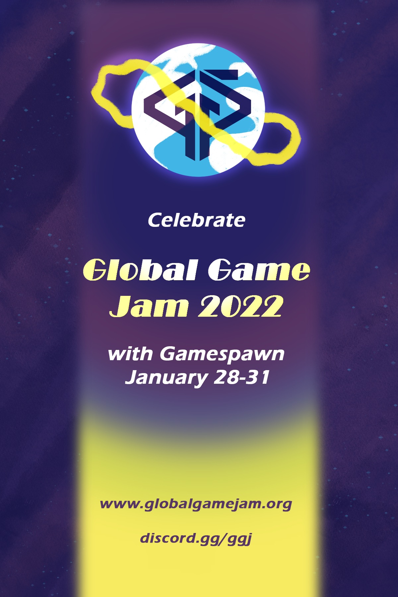
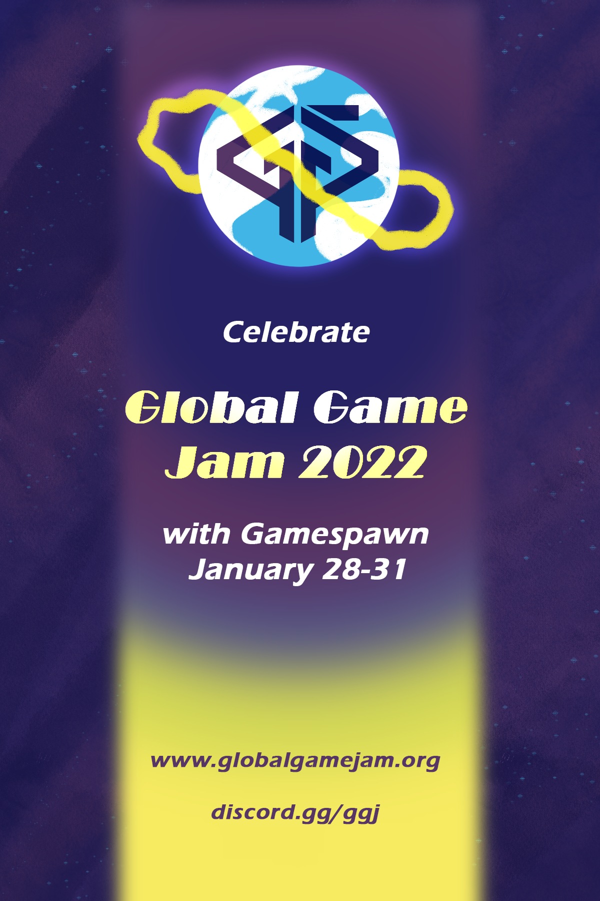
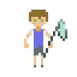
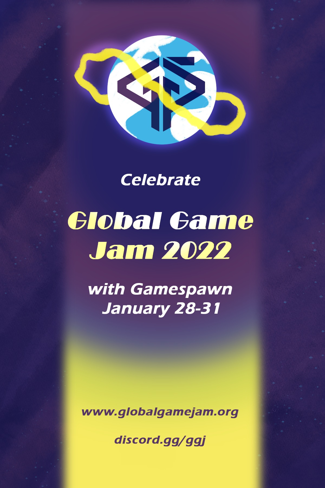
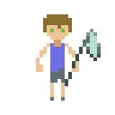

Izzy Arcinue
A passionate, meticulous student with the intention to work in the film industry. Has worked in multiple shows and films with UCR's Film and Theater department on-campus and virtually. Has created several written pieces of screenplays and play scripts for classes and projects. Has acted in several productions, both on stage and on camera. Relevant coursework includes several advanced acting classes, film production and editing workshops, writing for film and play courses, and history of theater and film productions. Learned to be flexible in schedule, recieve critique and improve acting techniques, multi-tasking acting and production jobs, and organizing documents relating to the research of some productions.Some produtions include: 31st Annual Pilipino Culture Night: Love Lost; Two Mile Hollow; Playworks 2021; She Kills Monsters; COMPLAINTS.
Has had broadened creative experience through endeavors such as narrative and game design thanks to being Vice President of the UCR game dev club, Gamespawn. Experience includes, but is not limited to, event coordination, administrative duties, club management, and project coordination. Experience in leadership has taught core values such as organization, time-management, teamwork, working well under pressure, and result-oriented action. Experience resulted from coordinating events such as end of quarter showcases, large in-person and virtual socials, and overseeing of on-going, quarterly projects. Has participated in several game jams where teams are formed to produce a playable demo of a video game in a set period of time ranging from a week to as little as 24 hours. Has completed a project called MOTHER NATURE for an event known as Global Game Jam 2022, an international program for game development groups across the world to participate in. Also coordinated the event for Gamespawn. The project is visible on Gamespawn's Global Game Jam 2022 site and Discord server. Is currently training the next cabinet of officers -- the Junior Officers 2021-22 -- to complete typical administrative duties of a Gamespawn Officer and to run for a position for 2022-21 Elections to become the 2022-23 Gamespawn Executive Board. Established the Junior Officer program as of January 2022.
Has worked professionally in retail in the printing industry and closely with software such as the Premiere Pro CC 2022 and Photoshop 2022. Was employed at two different OfficeMax locations; has experience with customer service and technical experience with managing and operating advanced printers and print equipment as well as coming up with creative solutions for print orders such as event flyers, invitations, and business promotions. Uses these software in class and intends to use them professionally in both film, marketing, and social media. Trained in Premiere Pro for a quarter under film professor, Christophe Katrib. Has used Photoshop for over two years as a means of creating graphics and flyers for previous club Highlander Gaming as the secretary and current club Gamespawn as the Vice President and, subsequently, Social Coordinator. While still training to use Premiere Pro and Photoshop, has learned to pickup on cmoputer software and coding quickly such as HTML and game development languages such as Twine and Yarnspinner (which is a visual novel-compatible language for the industry-standard game engine, Unity). All technical skills culminate into creative skills.
Experience
Vice President
• Managed club activities and affairs
• Performed advanced administrative duties
• Trained Junior Officers in officer duties
Print Service Associate
• Responsible for checking online orders and completing them
• Assembled large format prints such as posters and canvases
• Created flyers, cards and posters for events and businesses
Secretary
• Handled administrative duties and documentation for the club
• Coordinated events with other officers such as professional Q+A sessions and casual movie nights
• Assisted and oversaw marketing team to generate positive member retention
Education
UC Riverside
Portfolio
 



